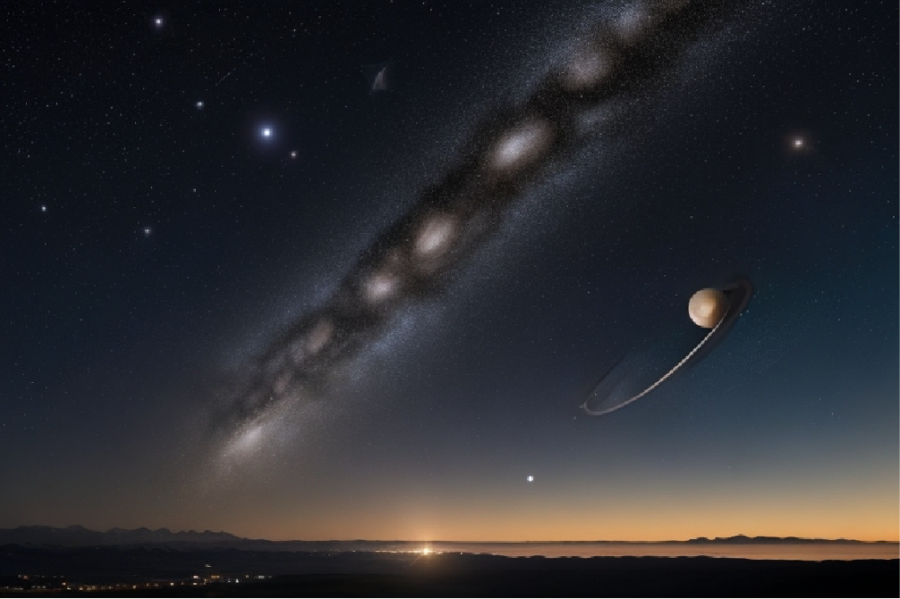

Fenómeno Cósmico Único: Conjunción de Planetas Ilumina el Cielo Nocturno
Una rara conjunción planetaria de Júpiter, Saturno, Venus y Marte iluminará los cielos nocturnos, creando un espectáculo celeste especial debido a su rareza. Los astrólogos sugieren que este evento traerá energía de cambio y transformación.
En una rara y asombrosa exhibición de la danza celestial, los amantes de la astronomía de todo el mundo están emocionados por una conjunción planetaria que iluminará los cielos nocturnos en las próximas semanas. Este fenómeno cósmico único implica la alineación visual de cuatro de los planetas más brillantes de nuestro sistema solar: Júpiter, Saturno, Venus y Marte.
Este espectáculo celeste es particularmente especial debido a su rareza. Los planetas Júpiter y Saturno, conocidos como los gigantes gaseosos, están alcanzando su máxima cercanía en el cielo nocturno. Estos dos colosos planetarios son visibles en la constelación de Acuario, creando una imagen impresionante para los observadores de estrellas. Además, Venus y Marte se unen a la fiesta, formando una alineación impresionante en el horizonte oeste durante el crepúsculo vespertino.
La influencia astrológica de este evento no pasa desapercibida, ya que los astrólogos sugieren que esta conjunción promete traer una energía de cambio y transformación. Se cree que es un momento propicio para la reflexión y la toma de decisiones importantes en la vida de las personas.
Los observadores del cielo, desde los aficionados hasta los astrónomos profesionales, se preparan para disfrutar de esta alineación planetaria única que no volverá a ocurrir en varias décadas.